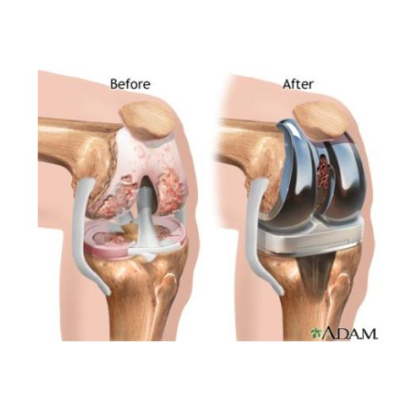

La sustitución total de rodilla o artroplastia total de rodilla es una intervención quirúrgica avanzada diseñada para restaurar la función articular, eliminar el dolor y mejorar la calidad de vida en pacientes con artrosis severa u otras enfermedades degenerativas de la rodilla.
Durante la cirugía, se extraen las superficies articulares dañadas y se reemplazan con implantes de alta tecnología en metal y polietileno biocompatible, que imitan el movimiento natural de la rodilla.
Un reemplazo de rodilla bien realizado no solo alivia el dolor, sino que también permite a los pacientes recuperar la movilidad, volver a caminar sin dificultad y disfrutar de una vida activa.

La rodilla es una articulación compleja y vital, formada por: ✔ Fémur (hueso del muslo) ✔ Tibia (hueso de la pierna) ✔ Rótula (patela)
Cada uno de estos huesos está recubierto por cartílago articular, una superficie lisa y amortiguadora que permite un movimiento fluido y sin fricción. Además, los meniscos actúan como amortiguadores naturales, distribuyendo la carga y protegiendo la articulación. Con el tiempo, debido al envejecimiento, lesiones o enfermedades degenerativas, el cartílago articular se desgasta, exponiendo el hueso subyacente. Este proceso, conocido como artrosis, provoca: 🔹 Dolor e inflamación 🔹 Rigidez y pérdida de movilidad 🔹 Dificultad para caminar y realizar actividades diarias La artrosis de rodilla puede afectar uno o más de sus tres compartimentos: Compartimento medial (interno) Compartimento lateral (externo) Compartimento fémoro-rotuliano (debajo de la rótula) Si al menos dos compartimentos están gravemente afectados, la sustitución total de rodilla es la mejor opción quirúrgica.
Aunque las causas exactas de la artrosis siguen en estudio, hay varios factores de riesgo que favorecen su aparición: ✔ Lesiones previas o fracturas de rodilla ✔ Sobrepeso y obesidad (mayor carga sobre la articulación) ✔ Movimientos repetitivos y sobreuso (deportes de impacto, trabajos físicos intensos) ✔ Enfermedades inflamatorias articulares (artritis reumatoide, gota) ✔ Factores genéticos o malformaciones congénitas ✔ Infecciones articulares previas
Para confirmar el diagnóstico de artrosis y planificar el tratamiento más adecuado, se requiere una evaluación exhaustiva: 🔹 Historia clínica detallada y exploración física 🔹 Radiografías para evaluar el estado del cartílago, la presencia de osteofitos y la alineación articular 🔹 Resonancia magnética (en casos específicos) para examinar meniscos, ligamentos y cartílago residual Con esta información, se diseña un tratamiento personalizado según el grado de afectación articular y la interferencia en la calidad de vida del paciente.
La cirugía de reemplazo de rodilla está indicada en pacientes con: ✅ Dolor severo persistente, que limita actividades como caminar, subir escaleras o levantarse de una silla. ✅ Dolor en reposo, especialmente nocturno, que interfiere con el sueño. ✅ Inflamación y rigidez crónica, sin mejoría con medicamentos o fisioterapia. ✅ Fallo de los tratamientos conservadores, como pérdida de peso, inyecciones intraarticulares (PRP, ácido hialurónico) y rehabilitación. ✅ Deformidad progresiva de la pierna (piernas en "O" o en "X"). Si el desgaste afecta al menos dos compartimentos de la rodilla, la sustitución total de rodilla es la opción más efectiva.
Objetivos de la Cirugía
✔ Eliminar el dolor ✔ Restaurar la alineación y funcionalidad de la rodilla ✔ Garantizar la máxima durabilidad del implante
1️⃣ Incisión y Exposición del Articulación El cirujano realiza una incisión en la parte frontal de la rodilla para acceder a la articulación. 2️⃣ Eliminación del Cartílago y Hueso Dañado Se recortan las superficies desgastadas del fémur y la tibia, siguiendo ángulos precisos para una alineación perfecta. Se utilizan guías quirúrgicas especializadas para garantizar el mejor ajuste del implante. 3️⃣ Colocación del Implante Protésico Se fija un componente femoral metálico en el extremo del fémur con cemento óseo biocompatible. Se coloca un componente tibial, asegurándolo firmemente a la tibia. Entre ambos implantes se coloca un inserto de polietileno de alta resistencia, que facilita un movimiento suave y sin fricción. 4️⃣ Preparación de la Rótula La superficie posterior de la rótula se remodela para permitir un deslizamiento óptimo sobre la nueva articulación. 5️⃣ Evaluación Final y Cierre de la Incisión Se prueba la articulación en todo su rango de movimiento para verificar su estabilidad y alineación. Se sutura cuidadosamente la herida y se aplica un vendaje estéril. Duración de la cirugía: 1-2 horas.
El protocolo de recuperación rápida incluye: ✔ Deambulación en las primeras horas tras la cirugía, con soporte inicial. ✔ Inicio inmediato de fisioterapia, con ejercicios para recuperar fuerza y flexibilidad. ✔ Plan de rehabilitación personalizado para asegurar una recuperación completa. ✔ Tiempos de recuperación estimados: Recuperación funcional inicial: 2-6 semanas Regreso a actividades diarias: 6-12 semanas Recuperación completa y deportes: 3-6 meses
Aunque la prótesis total de rodilla es una de las cirugías más exitosas en ortopedia, existen algunos riesgos como: 🔹 Infección 🔹 Trombosis venosa profunda o embolia pulmonar 🔹 Lesión de nervios o vasos sanguíneos 🔹 Desgaste o aflojamiento del implante con el tiempo 🔹 Rigidez o limitación del movimiento articular Gracias a las técnicas quirúrgicas avanzadas y la rehabilitación personalizada, el riesgo de complicaciones es mínimo.
Técnicas mínimamente invasivas y preservación de tejidos blandos ✔ Selección de implantes personalizados para cada paciente ✔ Cirugía asistida por tecnología (navegación, realidad aumentada) ✔ Recuperación acelerada (caminar en 2 horas, alta en 24-36 horas)